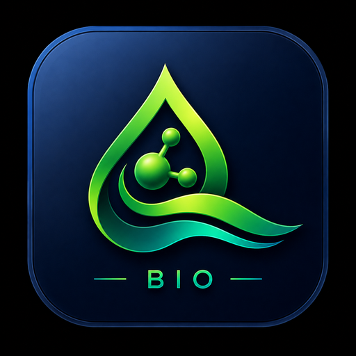

Biological wastewater treatment design, process mass balance, residuals handling, compliance review, and cross-application handoff.
Part of the Total Water Design Suite. Steady-state design tool; project-specific engineering review remains required.
Transferred biological effluent values retain lineage. Complete ionic chemistry, salinity, scaling species and membrane design remain Total RO Design inputs.